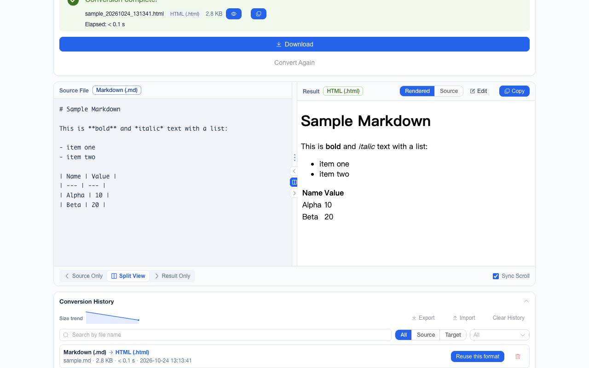

离线 · 无上传 · 浏览器本地完成Offline · no uploads · runs in the browser
Excel 转纯文本（.xlsx → .txt）——离线、制表符分隔Excel to plain text (.xlsx → .txt) offline, tab-separated
工单系统、邮件正文、另一个编辑器的查找替换——很多地方只吃一段纯文本，而你手里是一张 Excel。这条链路是 Excel → HTML → 纯文本：每张工作表先写成一张 HTML 表格，再由提取器把行写成一行文本、单元格之间放制表符。它保的是「哪一格属于哪一行哪一列」这件事，代价是公式、样式与图表都不进产物。A ticket, an email body, another editor’s find-and-replace — plenty of places take only plain text, and what you have is a spreadsheet. This route is Excel → HTML → plain text: each worksheet becomes an HTML table and the extractor writes rows as lines with tabs between cells. What survives is which cell belongs to which row and column; what does not is formulas, styling and charts.

这条链路怎么走How the route runs
Excel (.xlsx)Excel (.xlsx) HTMLHTML 纯文本 (TXT)plain text (TXT)
共 2 步，由扩展的路径搜索自动选出，中间产物不落盘。2 steps, chosen by the extension's own path search; intermediate results never touch the disk.
会保留什么What carries over
- 按工作表顺序逐行读取：同一行的单元格之间以制表符分隔，行末换行，列序与原表一致Cell text is read in worksheet order: tabs between the cells of a row, a newline at the row end, columns in the sheet’s order
- 日期单元格先按工作簿自己的格式归一再写文本，避免 `1/5/24` 这种跨地区会读错的写法Date cells are normalised from the workbook’s own format before they are written, so `1/5/24`-style ambiguity does not appear
- 数据矩形内的空单元格保留为「相邻两个制表符」，所以中间的列不会错位；行尾那几格若整表都没写过值，则随稀疏边界一起不在产物里An empty cell inside the used range stays an empty field — two adjacent tabs — so the middle columns keep their places; trailing blanks past the sheet’s own extent are not written at all
- 多张表的工作簿里，每张表前有一行以表名为内容的标题；表格之外不存在别的东西可读In a multi-sheet workbook each table is introduced by a line carrying the sheet name; there is nothing outside the tables to read
如实说明的限制What it does not do
- 公式不进产物：读到的是算完之后的值。要留在电子表格里继续算，走 Excel 转 CSV 或 Excel 转 ExcelFormulas do not travel: what is read is the computed value. To keep computing, take Excel to CSV or stay inside spreadsheet formats
- 图表、条件格式、单元格底色与字体、列宽都不在纯文本里——它们本来就没有文本表示Charts, conditional formatting, cell fills, fonts and column widths have no plain-text representation and are not in the output
- 表名只是正文里的一行文字，不会成为可寻址的分隔（要一张表一个文件，走 Excel 转 CSV，那条给的是 ZIP）A sheet name is one line of text, not an addressable separator — for one file per sheet, take Excel to CSV, which packages them as a ZIP
- 单元格内的换行（Alt + 回车）会写成真正的换行，所以一行工作表在文本里可能占好几行A newline inside a cell (Alt+Enter) is written as a newline, so one worksheet row can occupy several text lines
- 一张表最多读 50 万格、整个工作簿最多 100 万格，超过直接报错，不会给你一份截断的文本At most 500,000 cells per sheet and 1,000,000 per workbook are read; past that it fails rather than handing back a truncated text
- 工作表名恰好是 `toString`、`constructor` 这类原型上的名字时，读取按不继承原型的自有属性处理，不会因为「看着像有表」就把空表当成有内容A sheet named `toString` or `constructor` is read through own properties rather than the prototype chain, so a lookalike name cannot make an empty sheet appear to hold content
实操提示Working with it
- 一批最多 200 个文件，单个文件上限 100 MB；多个 .xlsx 一起转逐个产出各自的 .txt，想一次拿走就打成一个 ZIPUp to 200 files per batch and 100 MB per file; several .xlsx files yield one .txt each, and the set can be taken as a single ZIP
- 要更「像数据」的产物：Excel 转 CSV（每表一个文件、打包成 ZIP）、Excel 转 JSON（一份文件、多表按表名分组）For something more like data: Excel to CSV (one file per sheet, packaged as a ZIP) or Excel to JSON (one file, sheets grouped by name)
- 要能贴回可编辑表格的产物：Excel 转 HTML 或 Excel 转 Markdown（管道表）For something you can paste back as an editable table: Excel to HTML or Excel to Markdown (a pipe table)
常见问题Questions people actually ask
为什么不直接导出 CSV？Why not just export a CSV instead?
如果你要的是「能被表格软件再读进去」，CSV 确实更合适——它带引号转义，多张表会一张一个文件。纯文本这一条服务的是另一种场景：粘进一个只接受文本的框里、并且希望列还能用制表符对齐。两种产物的用途不同，不是替代关系。If the target is something a spreadsheet can read back, CSV is the better fit — it quotes and escapes, and a multi-sheet workbook arrives as one file per sheet. Plain text serves the other case: pasting into a box that takes only text, with columns still aligned by tabs. Different jobs, not substitutes.
合并单元格会变成什么？What happens to merged cells?
合并的信息在 HTML 那一步以 colspan / rowspan 保留，但纯文本没有「跨列」这个概念，而且被覆盖的那几格根本不产生单元格——于是合并区右边的列会整体左移一格。要列位置稳定，先取消合并再转（或直接走 Excel 转 CSV）。The merge survives as far as the HTML step, as colspan / rowspan, but plain text has no notion of spanning and the covered cells emit nothing at all — so the columns right of a merge shift one place left. Unmerge first for stable columns, or take Excel to CSV.
工资表要转文本，数据会外发吗？If I turn a payroll sheet into text, does the data leave my machine?
不会。读工作簿、生成表格、提取文本都在扩展的标签页里完成，只申请 storage 权限、没有 host 权限，产物里也没有把远端资源当代码执行的路径。No. Reading the workbook, building the table and extracting the text all happen inside the extension’s tab: the storage permission only, no host permissions, and no path in the bundle that executes remotely hosted code.
不需要账号，也不需要联网：装好扩展后点图标，在新标签页里打开工作台，文件从磁盘直接选。No account and no network: install the extension, click its icon, and the workbench opens in a new tab reading straight off your disk.
从 Chrome 应用商店安装Install from the Chrome Web Store 安装步骤Install steps GitHub 源码Source on GitHub